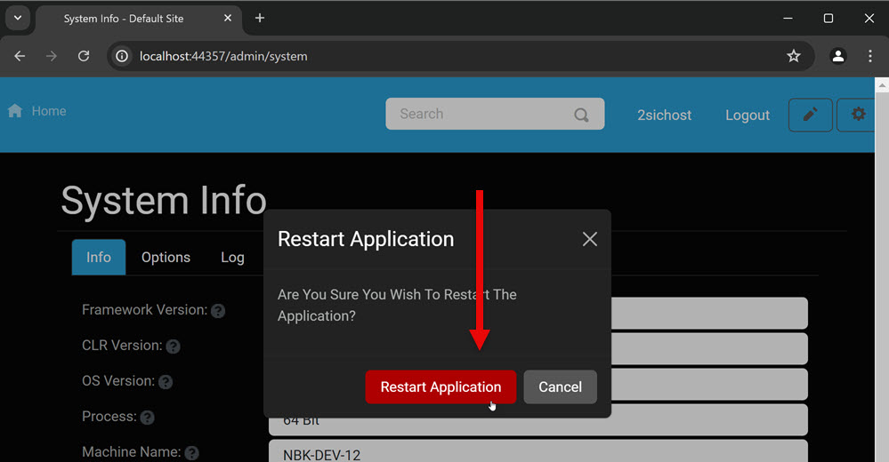
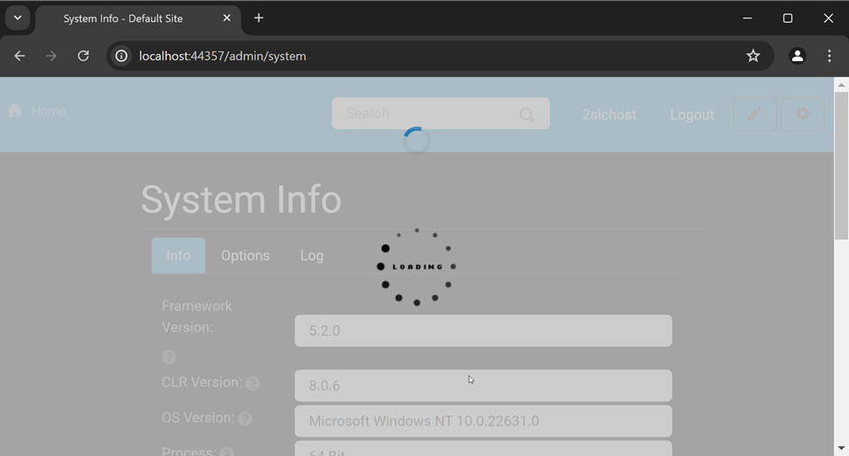
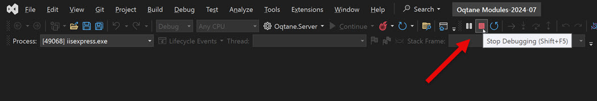

How To Restart Oqtane
There are a few scenarios where you will want to restart Oqtane. The most common is after installing/updating an extension.
The process is different depending on if you are running Oqtane from Visual Studio (while developing) or if you are running in production (typically in IIS).
Restart Oqtane in Production
Go to /admin/system and hit Restart...

...confirm your choice...
...and wait for it to restart.
Restart Oqtane in Development Mode
If you try to restart Oqtane from the System dialog during development, it will only shut down Oqtane, since Visual Studio will terminate the process. So you can use the steps above to stop Oqtane, but this makes more sense:
Stop Oqtane in Visual Studio:
...then start it again:

Manually Force-Restart Oqtane
In special scenarios - e.g. in production when Oqtane crashes, you may want to force-restart Oqtane.
The simplest method to do this is to open the web.config and save it again.
This will restart Oqtane.